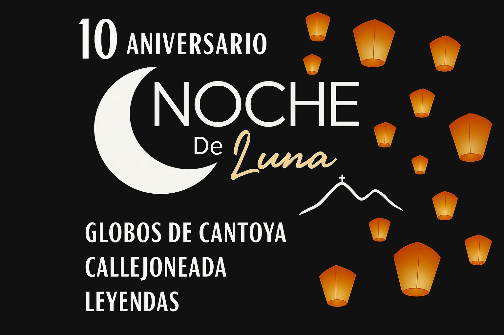

Noche de Luna
7:00 pm | Leyendas en el jardín principal de Villa Progreso
Las historias más antiguas y fascinantes de nuestra comunidad cobrarán vida. Descubre los secretos que se esconden en cada rincón de Villa Progreso.
8:00 pm | Tradición y alegría (sorpresa)
Sé testigo del comienzo de un recorrido festivo lleno de color, música y baile. La celebración arranca en el jardín principal.
8:20 pm | Callejoneada mágica
Acompaña este vibrante recorrido por las calles de nuestro pueblo. ¡Siente la energía y el ambiente festivo en cada paso! Acompañado del burrito tequilero.
9:00 pm | Llegada al parador las Tetillas
El recorrido culminará en este emblemático lugar, donde la noche continuará con más sorpresas.
9:30 pm | Presentación de la Rondalla de la UAQ
Este momento mágico será acompañado por las hermosas melodías de la Rondalla de la UAQ, cuyos acordes llenarán el ambiente de romanticismo y nostalgia.
10:30 pm | Un cielo de deseos
El gran final será espectacular. Elevaremos globos de cantoya gigantes para iluminar el cielo nocturno.
Ven, conoce y enamórate de "La Joya del Semidesierto"
Entrada libre Contaremos con venta de globos de cantoya, artesanías y antojitos.